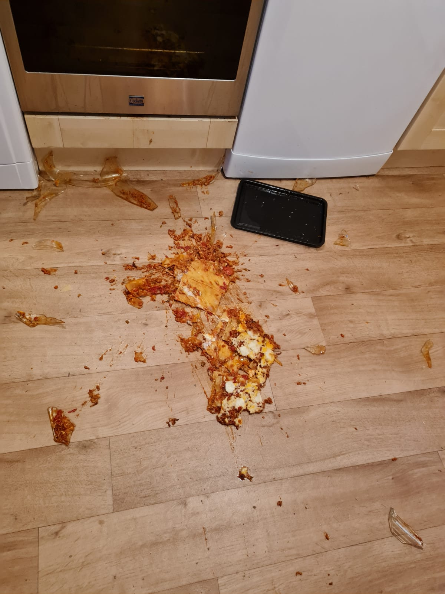

Lasagna Recipe

Description
Delicious layered pasta dish that can feed the whole family!
Ingredients
- Meat - Italian sausage and lean ground beef
- Onion and Garlic - Add an onion and two cloves of garlic when cooking the meat
- Tomato Products - One can of crushed tomatoes, two cans of tomato sauce, and two cans of tomato paste
- Sugar - Two tablespoons of white sugar added to the sauce
- Spices and seasonings - Fresh parsley, dried basil leaves, salt, Italian seasoning, fennel seeds, and black pepper
- Lasagna noodles - Use store-bought lasagna noodles or make your own
- Cheeses - Parmesan, mozzarella, and (most importantly) ricotta cheese
- Egg - Helps build the ricotta so it doesn't ooze out of the lasagna when you cut into it
Directions
- Make the meat sauce
- Cook the noodles
- Make the ricotta mixture
- Layer the lasagna in the following order:
- Meat sauce
- Noodles
- Ricotta Mixture
- Mozzarella slices
- Meat sauce
- Parmesan cheese
- Repeat the layers, then top with the remaining Parmesan
- Cover with foil and bake
How Long to Cook Lasagna
Preheat oven to 375 degrees F. Cover it with foil for the first 25 minutes,
then let it cook uncovered for the final 25 minutes. Let sit for about 15 minutes before serving.
Return to homepage